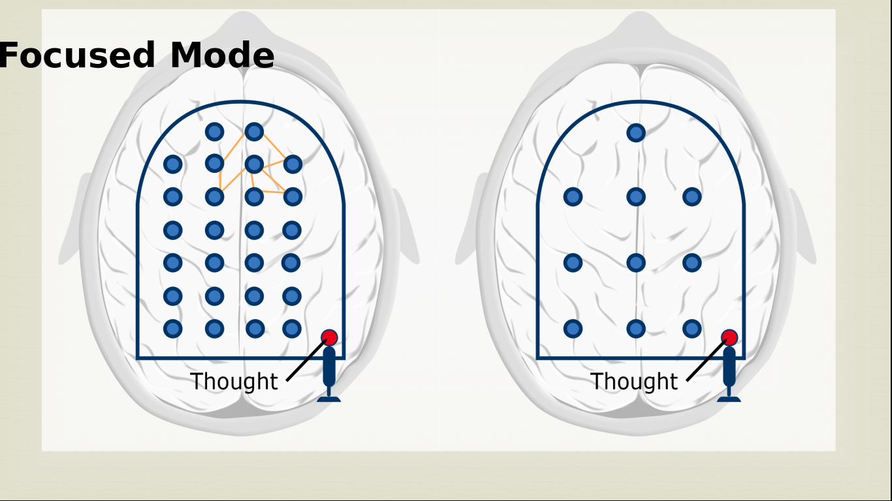
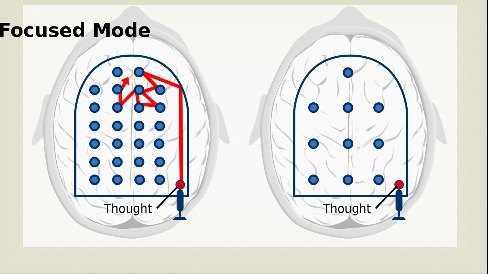
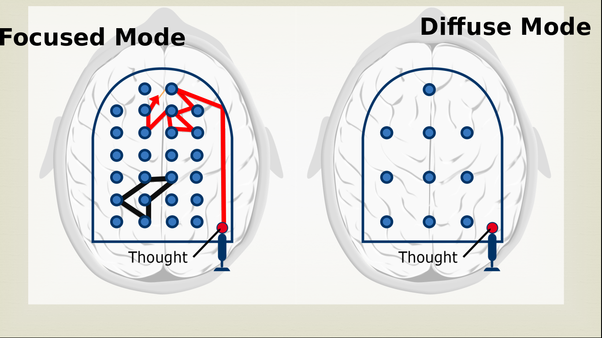
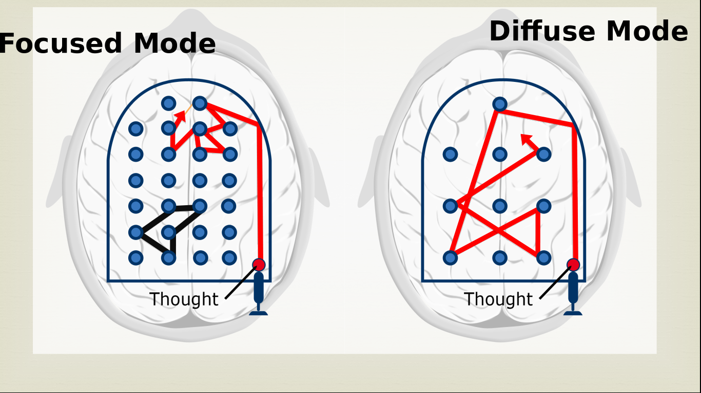
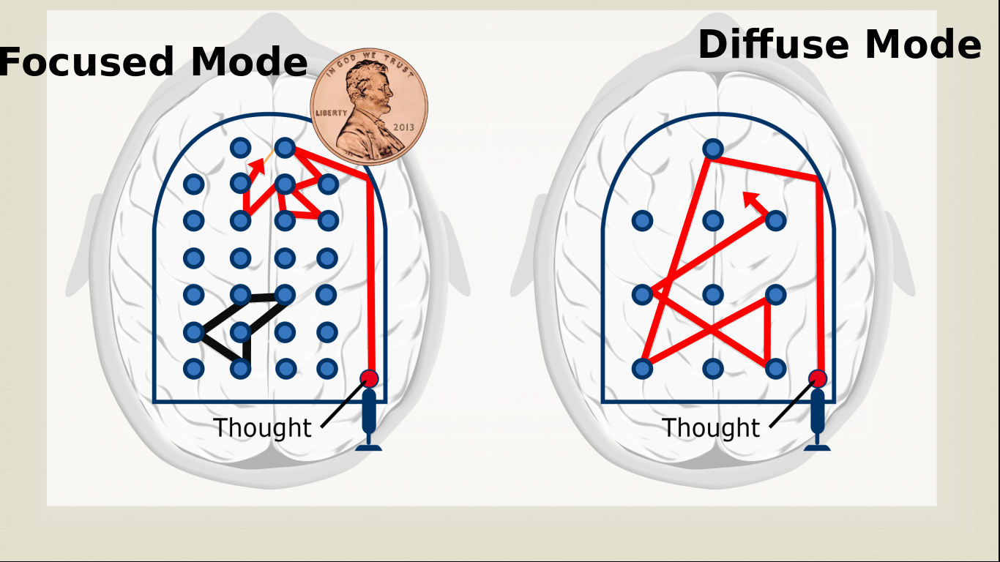
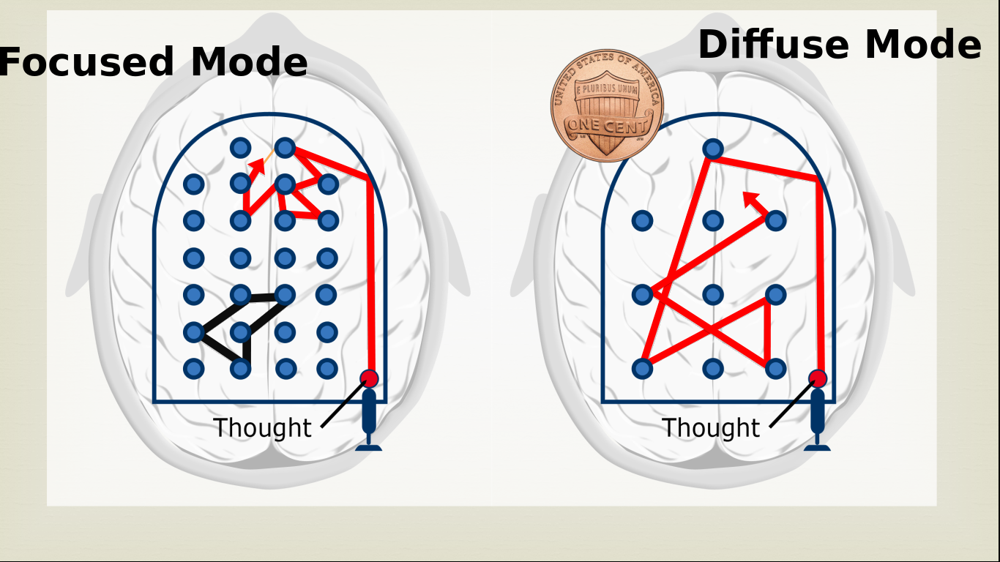

¿Que es aprender?
Apesar de que los cerebros vivos son muy complejos, Este modulo usa metaforas y analogias para ayudar a simplificar las cosa. Descubriras fundamental mente varios modos de pensamiento diferentes, y como puedes usar estos modos para mejorar tu aprendizaje. Ademas seras introducido a una herramienta para enfrentar a la procrastinacion , sera dada algo de informacion practica acerca de la memoria y descubriras ideas sorprendentes y utiles acerca de el aprendizaje y el sueño.
Pensamiento Enfocado contra el pensamiento difuso.
Introcuccion al modo concentrado y modo difuso.
Resulta, aunque, que si tu entiendes solo un poco de
algo de lo basico acerca de como tu cerebro funciona
, tu puedes aprender mas facilmente y estar menos
frustrado. Los investigadores han encontrado que tenemos
fundamental mente dos modos de pensamiento .
Aqui, Yo los llamaria el Modo concentrado y el modo difuso.
Nosotros estamos familiarizados con la concentracion. Es cuando
tu te concentras intensamente en algo que estas tratado
de aprender o de entender, pero no estamos tan
familiarizados con el pensamiento difuso.
Resulta que este estylo mas relajado de pensamiento
esta relacionado con un conjunto de estados neuronales
de descanso. Vamos a usar una analogia de el juego de
pinball para ayudarnos a entender estos dos modos de
pensamiento. Incidentalmente, Ambos, metafora y analogia
son muy utiles cuando estas tratando de aprender algo nuevo.
Si tu recuerdas, un juego de pinball funciona si tu jalas
la palanca, liberando la bola, y la bola va rebotando
saltando alrededor de el bumper de goma, y asi es como
consigues puntos.
Asi que aquiesta tu cerebro, con los oidos justo
aqui, y los ojos mirando hacia arriba.

Y podemos poner esa maquina de piball justo abajo dentro
de el. Asi que aqui vas.
Ahi esta la analogia para el modo concentrado.
Los parachoques aqui estan espaciados muy cerca el
uno al otro.
¿Ves ese patron naranja aqui hacia la cima?
Representa un patron de pensamiento familiar.

Quizas envuelve algo simple como agregar algunos
numeros , o ideas mas avanzadas como criticismo literario
o calcular flujos electromagneticos.
Tu piensas un pensamiento, boom! este despega,
moviendose suavemente.
Y depues, a como este va rebotando alrededor de los bumpers
, tu eres capaz decifrar el problema que estas tratando
de resolver o el concepto que estas intentando
de entender que esta relacionado a algo
con lo que estas familiarizado.
Asi que mira como esos pensamientos se mueven lentamente
alrededor de el difuso camino neuronal subrayado en naranja.
En cierto sentido Es como si estuviera viajando alo largo
de una carretera familiar, pavimentada y agradable.
Pero ¿Que si el problema en el que estas trabajando necesita
nuevas ideas o enfoques? Conceptos que no has pensado
antes.
Eso esta simbolizado aqui por estos patrones hacia el fondo
del area de la maquina de pinball. Pero si no has pensado
esos pensamientos antes, tu no sabes incluso como
esos patrones se sienten o donde estan.
Asi que ¿Como vas a desarrollar esos nuevos pensamientos
en primer lugar?

No solamente no sabes donde estan los patrones o como son los
patrones, Pero mira, todas los bumpers de goma que estan bloqueando
tu acceso en cualquier direccion que decidas moverte.
Para conseguir este nuevo patron de pensamiento,
tu necesitas una forma diferente de pensamiento.
Y eso esta representado aqui, Por el modo difuso. Mira como
estan ampliamente espaciados los bumpers de goma.
Los pensamientos despegan, mira como se mueven ampliamente,
rebotando alrededor. Estos podrian viajar en un largo camino
antes de ser interrumpidos por un un bumper golpeandolos.
En este modo difuso de pensamiento, puedes ver las cosas
en general desde una diferente, gran imagen perspectiva.
Puedes hacer nuevas conexiones neuronales viajando a lo largo
de nuevos caminos.
No puedes concentrarte tan fuerte como tu amenudo
necesitas, para finalizar cualquier tipo de
solucion de problema o entender los mejores aspectos
de un concepto, Pero tu puedes al menos conseguir
la posicion inicial que necesitas para estar
en casa dentro en la solucion.
Ahora hasta donde los neurocientificos saben justo Ahora
, tu estas ya sea en el modo concentrado o en el
modo difuso de pensamiento.

Parece ser que no puedes estar en ambos modos de pensamiento
al mismo tiempo.Es como algun tipo de moneda. Podemos ver
ya sea un lado, o el otro lado de la moneda pero no ambos
lados al mismo tiempo. Estar en un modo parece limitar tu
acceso a las otras formas de modo de pensamiento.

